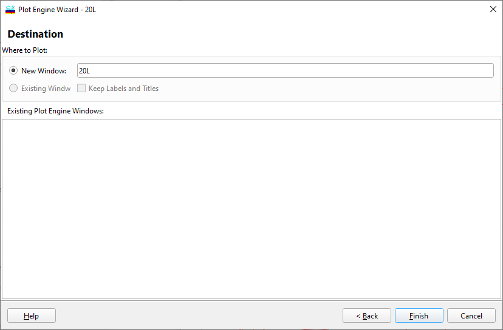

Plot Engine Window
Plot Engine Window
Navigation: OptiLayer Menu Commands > Analysis Menu > Plot Engine >
Plot Engine Window
` <idh_plot_engine_2.html>`__ ` <idh_plot_engine.html>`__ ` <idh_error_analysis.html>`__
The final stage in setting up the OptiLayer Plot Engine is to select the destination window for plotting.

At this stage, you can specify whether the new characteristic will be plotted in a new window or added to an already existing window (if any). The list of existing plot windows is provided for reference. If you choose the New Window option, you can set the name of this window in the edit box. If Keep Labels and Titles is checked, exporting new data to the existing window will not affect its titles and labels. Press the Finish button to complete the plotting setup; after a while, the plot window will appear on the screen. If you are not satisfied with the chart appearance, press the Back button to return to the previous stage of the setup. You can also switch between the setup pages using the page tabs To Plot, Layout, Destination at the top of the dialog window. If you decide not to plot anything at this time, press the Cancel button. See also: